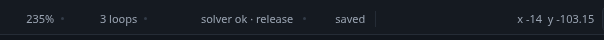

Solver — Mode Penyelesaian
Solver adalah mesin yang menerapkan dimensi penggerak dan constraint ke geometri. Ada tiga mode yang bisa diubah melalui chip solver di baris status ribbon.

1. Tiga mode solver
| Mode | Keterangan |
|---|---|
| On release (default) | Drag tidak memicu solve. Satu solve dijalankan saat mouse dilepas (dan hanya jika objek yang disentuh benar-benar terhubung constraint aktif). Mengedit tetap ringan walau geometri banyak. |
| Manual | Hanya F9 yang menjalankan solve. Cocok untuk nesting manual atau saat ingin mengontrol kapan geometri diselesaikan. |
| Live | Solve setiap gerakan (perilaku lama). Lebih responsif tapi lebih berat pada file besar. |
F9 selalu solve segera, apa pun mode yang dipilih.
2. Mengubah mode
- Klik chip solver di baris status ribbon (status tulisan "solver idle" / "solver ok").
- Pilih mode: on release → manual → live.
- Mode baru langsung berlaku.
3. Dimensi belum terpenuhi (amber)
Dimensi penggerak yang nilainya belum terpenuhi oleh geometri saat ini digambar dengan warna amber. Jendela KaryaCNC juga memperingatkan sebelum mengirim jika ada dimensi amber.
- Tekan F9 untuk menyelesaikan sketsa setelah mengubah dimensi.
- Pilih dimensi lalu tekan Enter untuk mengedit nilainya.
- Tekan Shift+D pada dimensi untuk berpindah antara penggerak dan referensi.
Sebaiknya: gunakan mode On release saat menggambar banyak geometri, lalu tekan F9 sekali selesai. Hindari mode Live pada file besar karena solve berulang akan menguras performa.
4. Hubungan dengan fitur lain
- Drag wall (W): gunakan mode Release/Manual untuk nesting yang tepat, karena drag dengan live-solve dapat merusak cached wall.
- Constraint: sebelum constraint dipasang, sketsa diperiksa (duplikasi atau kontradiksi ditolak).
- Auto solve (Settings ▸ Geometry): jika nyala, drag menjalankan solve penuh secara teratur tanpa menunggu mouse dilepas.
Solver — Solve Modes
The geometric solver applies driving dimensions and constraints to your geometry. Switch between its three modes using the solver status chip in the ribbon bar.
1. Three solver modes
| Mode | Description |
|---|---|
| On release (default) | Dragging does not trigger live solves; one focused solve runs on mouse release only if constrained geometry was moved, keeping large sketches snappy. |
| Manual | Only F9 solves constraints. Best for manual nesting or when you want complete control over when geometry updates. |
| Live | Continuously solves every pointer move during drag. Immediate feedback, though heavier on large files. |
F9 always triggers an immediate full solve regardless of the selected mode.
2. Changing modes
- Click the solver chip in the ribbon status bar ("solver idle" / "solver ok").
- Cycle between on release → manual → live.
- The selected mode takes effect immediately.
3. Unsatisfied dimensions (amber)
Driving dimensions that do not yet match their target value are rendered in amber. KaryaCNC export warns if any amber dimensions remain unresolved.
- Press F9 to solve after editing dimension values.
- Select a dimension and press Enter to change its value.
- Press Shift+D on a selected dimension to toggle between driving and reference mode.
Tip: stay on On release while sketching complex parts and hit F9 when finished. Avoid Live mode on heavy imports.
4. Interaction with other tools
- Drag wall (W): use Release or Manual mode so live solving never invalidates cached collision walls mid-drag.
- Constraints: duplicate or contradictory constraints are checked and rejected before insertion.
- Auto solve (Settings ▸ Geometry): periodically solves while dragging when explicitly turned on.